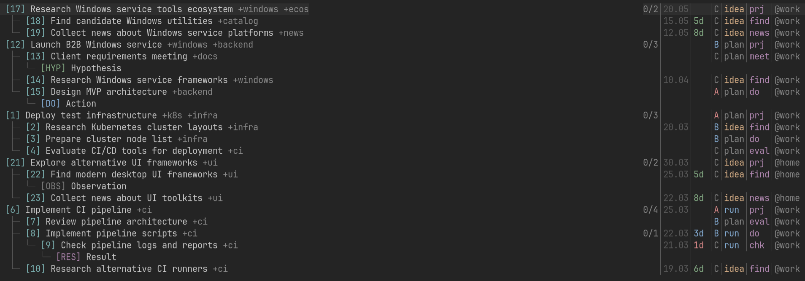
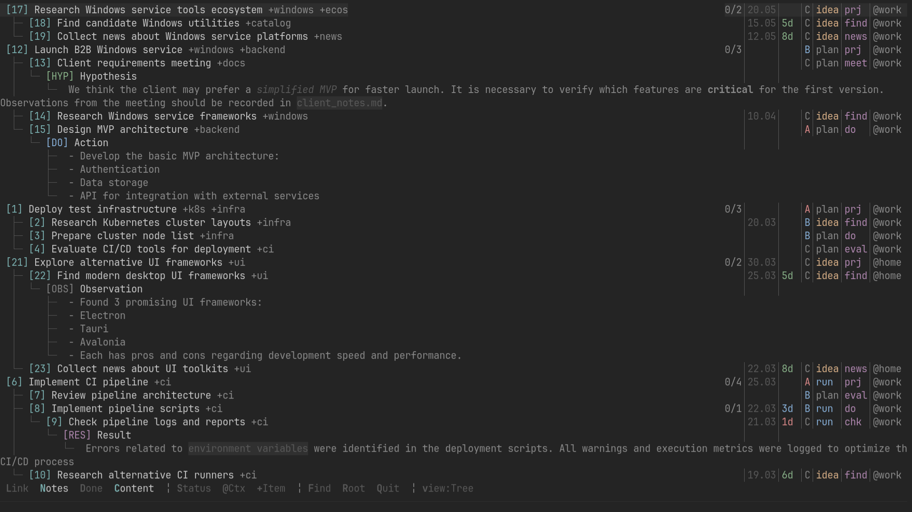
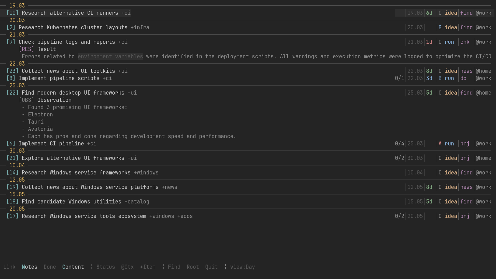

Interactive Todo.txt Tree Viewer
Terminal Task Organizer with Tree Visualization

Why This Matters
When your task list grows into a multi-level hierarchy with dependencies, notes, and links, a plain text file becomes unwieldy. Sure, you could open it in an editor, search for link:, jump between files—but that’s exhausting. What you really want is to see the whole structure at once: who depends on whom, which tasks are connected, where the priorities lie.
show-links.py is an interactive TUI visualizer for todo.txt that displays tasks as a dependency tree, filters by status, context, and tags, and integrates with markdown notes. Think of it as a file manager for tasks—quick navigation through the hierarchy, seeing the big picture, and editing what you need with a single keystroke.
Data Architecture
The foundation rests on two key structures: Task and RNote.
Task — The Task Model
Each line in todo.txt gets parsed into a Task object:
show-links.py
@dataclass
class Task:
line_num: int; raw: str; title: str
done: bool = False
priority: Optional[str] = None
tid: Optional[str] = None
status: Optional[str] = None
link: Optional[str] = None
ttype: Optional[str] = None
tags: List[str] = field(default_factory=list)
tags_lc: Set[str] = field(default_factory=set)
ctx: Optional[str] = None
due: Optional[str] = None
filepath: Optional[Path] = None
notes: List[RNote] = field(default_factory=list)- 1
-
Unique task identifier (e.g.,
id:some_task) - 2
-
Current status:
run,hold,idea,todo - 3
- Link to parent task for dependency chain
- 4
-
Task type:
dev,bug,feature, etc. - 5
-
Tags for categorization like
+project,+urgent - 6
- Lowercase cache for case-insensitive search
- 7
-
Context marker like
@home,@work - 8
-
Due date in ISO format
2024-03-15
Interesting detail: tags are stored in two formats—both the original list and a lowercase cache. This enables case-insensitive search without repeated conversions.
Parsing happens via regex patterns that extract metadata directly from the task text:
show-links.py
_RE_PRIORITY = re.compile(r"\(([A-Z])\)")
_RE_TASK_ID = re.compile(r"id:(\S+)")
_RE_LINK = re.compile(r"link:(\S+)")
_RE_STATUS = re.compile(r"st:(\S+)")
_RE_DUE = re.compile(r"due:([\d-]+)")- 1
-
Captures priority in format
(A),(B),(C) - 2
- Extracts unique task ID
- 3
- Finds link to parent task
- 4
- Determines current status (run/hold/idea)
- 5
- Parses ISO date format for deadlines
RNote — Note Hierarchy
Markdown notes are parsed into a tree structure based on heading levels:
show-links.py
@dataclass
class RNote:
title: str
ntype: Optional[str] = None
date: Optional[str] = None
nid: Optional[str] = None
link: Optional[str] = None
level: int = 2
line_num: int = 0
filepath: Optional[Path] = None
content: Optional[str] = None
content_lines: List[Tuple[int, str]] = field(default_factory=list)
children: List["RNote"] = field(default_factory=list)- 1
-
Note type:
OBS(observation),HYP(hypothesis),DO(action) - 2
- Date the note was created
- 3
- Optional note identifier for cross-referencing
- 4
- Link to parent note for hierarchy
- 5
- Child notes form the tree structure
The parser builds notes using a stack approach—a classic technique for building a tree from a flat list:
show-links.py
def parse_notes(content: str, filepath: Optional[Path] = None) -> List[RNote]:
notes: List[RNote] = []; stack: List[RNote] = []
for lineno, line in enumerate(content.split("\n"), 1):
hm = _RE_HEADER.match(line)
if hm:
lv, raw = len(hm.group(1)), hm.group(2).strip()
# Collapse stack to appropriate level
while stack and stack[-1].level >= lv:
stack.pop()
note = RNote(
title=t.strip(), level=lv,
ntype=_ex(_RE_TYPE, raw),
date=_ex(_RE_NDATE, raw),
)
if stack:
stack[-1].children.append(note)
else:
notes.append(note)
stack.append(note)- 1
- Initialize empty notes list and stack for hierarchy
- 2
- Find markdown headings (##, ###, etc.)
- 3
-
Count
#symbols to determine nesting level - 4
- Pop stack until we reach appropriate parent level
- 5
- If stack exists, add as child to current parent
- 6
- Otherwise, this is a root-level note
- 7
- Push current note onto stack for next iteration
The stack maintains the “path” from root to current element, automatically handling arbitrary nesting depths.
Dependency Graph
After parsing all tasks and notes, a dependency graph is built via link: fields:
show-links.py
def build_graph(tasks: List[Task]) -> tuple:
id2t = {t.tid: t for t in tasks if t.tid}
c2p = {} # child_id -> parent_id
for t in tasks:
if t.link and t.link in id2t:
c2p[t.tid] = t.link
return id2t, c2p- 1
- Build lookup table: task ID → Task object
- 2
- Build parent mapping: child ID → parent ID
- 3
- Only add link if parent task actually exists
Now you can build the task tree: if a task has link:parent_task, it becomes a child of parent_task.
Visualization: Two Modes
The script supports two display modes—Tree (hierarchical) and Day (by date).
Tree Mode

Tree view is built recursively:
show-links.py
def build_tree(tasks: List[Task], id2t, c2p, ...) -> List[Node]:
# Find root tasks (those without parents)
roots = [t for t in tasks if not t.tid or t.tid not in c2p]
def make_tree(task: Task) -> Node:
children = [id2t[cid] for cid, pid in c2p.items() if pid == task.tid]
return Node(
data=task,
children=[make_tree(c) for c in children],
notes=[make_tree_note(n) for n in task.notes]
)
return [make_tree(r) for r in roots]- 1
- Root tasks have no parent (not in child→parent mapping)
- 2
- Recursive function to build tree from task
- 3
- Find all tasks that link to current task
- 4
- Recursively build child nodes
- 5
- Build forest (multiple root trees)
The tree is displayed with indentation and symbols:
├─ (A) Write article st:run @home due:15.03
│ ├─ Gather references st:todo
│ └─ Prepare code st:hold
└─ Submit PR st:ideaDay Mode

In Day mode, tasks are grouped by date and status:
show-links.py
def build_day_view(tasks: List[Task]) -> List[DayGroup]:
# Group by date: overdue / today / future
overdue = [t for t in tasks if is_overdue(t.due)]
today = [t for t in tasks if is_today(t.due)]
future = [t for t in tasks if is_future(t.due)]
# Within groups, sort by priority and status
return [
DayGroup("Overdue", overdue),
DayGroup("Today", today),
DayGroup("Upcoming", future)
]- 1
- Tasks past their due date
- 2
- Tasks due today
- 3
- Tasks due in the future
This is useful for planning—you can see what’s burning, what needs attention today, and what’s coming up.
Color Palette and Rich
All output is implemented via the Rich library, which enables beautiful terminal UI.
Color Scheme
Colors are centrally defined:
show-links.py
C = dict(
red="#d78787", blue="#87afd7", yellow="#d7af87", green="#87af87",
mag="#af87af", cyan="#7aafaf", gray="#8a8a8a", dim="#585858",
orange="#af875f", white="#c6c6c6", sep="#818181",
)
PRIO = {"A": C["red"], "B": C["blue"], "C": C["sep"]}
STAT = {"idea": C["yellow"], "todo": C["dim"], "run": C["blue"],
"hold": C["orange"], "lock": C["red"]}- 1
- Base color palette inspired by terminal themes
- 2
- Priority levels: A (high/red), B (medium/blue), C (low/gray)
- 3
- Status colors: idea (yellow), active (blue), blocked (red)
Each priority, status, and note type gets its own color for instant visual distinction.
Rendering with Tag Highlighting
Tags in task titles are highlighted separately:
show-links.py
def _title_text(title: str, text_col: str, tag_col: str) -> Text:
tx = Text(no_wrap=False)
for part in _RE_TAG_PAT.split(title):
tx.append(part, style=tag_col if _RE_TAG_PAT.match(part) else text_col)
return tx- 1
-
Split title on tag boundaries (e.g.,
+urgent) - 2
- Apply tag color to tags, text color to everything else
If the title contains +urgent, it will be highlighted in the tag color while the rest uses the task’s main color.
Markdown in Notes
Notes support basic markdown formatting—bold, italic, and code:
show-links.py
def _md_text(raw: str, base: str) -> Text:
tx = Text(no_wrap=False); pos = 0
for m in _RE_MD.finditer(raw):
if m.start() > pos:
tx.append(raw[pos:m.start()], style=base)
if m.group(1) is not None:
tx.append(m.group(1), style=f"{base} bold")
elif m.group(2) is not None:
tx.append(m.group(2), style=f"{C['dim']} italic")
else:
tx.append(m.group(3), style=f"{C['dim']} on #303030")
pos = m.end()- 1
-
Find markdown patterns:
**text**,*text*,`text` - 2
- Double asterisks = bold
- 3
- Single asterisks = italic
- 4
- Backticks = code with dark background
This allows readable notes right in the terminal.
Filtering and Search
One of the most powerful features is the filtering system.
Text Search
Search works in real-time—the tree rebuilds with each character:
show-links.py
def _apply_search(st: St) -> None:
buf = st.input_buf
# If only digits entered — goto task by line number
if buf.isdigit() and buf:
target = st.ln2t.get(int(buf))
st.root_tid = target.tid if target else ""
st.flt_search = ""
else:
# Text search in titles
st.flt_search = buf
do_rebuild(st)- 1
- Numeric input = jump to line number
- 2
- Text input = filter by title content
- 3
- Rebuild entire tree with new filter
Building Branch from Line
“Goto” mode lets you enter a line number and build the tree from that task:
show-links.py
if st.input_buf.isdigit():
target = st.ln2t.get(int(st.input_buf))
if target:
# Find branch root (walk up parents)
root = target
seen = {target.tid}
while root.tid in st.c2p:
pid = st.c2p[root.tid]
if pid in seen:
break # cycle detected!
seen.add(pid)
root = st.id2t[pid]
st.root_tid = root.tid
do_rebuild(st)- 1
- Track visited task IDs
- 2
- Break if we encounter a cycle (A → B → C → A)
This is very convenient for focusing on a specific subtask and all its dependencies.
Interesting Technical Details
Tree Flattening for Display
The tree structure is rendered through “flattening”—converting the tree into a flat list with parent indices:
show-links.py
@dataclass
class FlatItem:
node: Node
depth: int
parent_idx: int
index: int
def flatten(roots: List[Node]) -> List[FlatItem]:
flat: List[FlatItem] = []
def walk(node: Node, depth: int, parent_idx: int):
idx = len(flat)
flat.append(FlatItem(node, depth, parent_idx, idx))
if node.expanded:
for child in node.children:
walk(child, depth + 1, idx)
for root in roots:
walk(root, 0, -1)
return flat- 1
- Indentation level for rendering
- 2
- Index of parent in flat list (-1 for roots)
- 3
- Own index in flat list
- 4
- Only recurse into expanded nodes
- 5
- Roots have depth 0, no parent
This enables: - List display with scrolling (cursor = index in flat) - Quick parent lookup via parent_idx - Easy node expand/collapse
Handling ANSI Codes
Rich generates ANSI escape codes for colors. When calculating string widths, these need to be ignored:
show-links.py
_RE_ANSI = re.compile(r"\x1b\[[0-9;]*m")
def _vlen(s: str) -> int:
"""Visual length of string (excluding ANSI codes)"""
return len(_RE_ANSI.sub("", s))- 1
- Pattern for ANSI escape sequences
- 2
- Strip ANSI codes before counting characters
Without this, colored strings would be counted as longer than they appear in the terminal.
Conclusions
show-links.py transforms flat todo.txt into an interactive dependency graph with fast navigation and powerful filtering. It’s a great example of how you can take a simple text format and add rich visualization without abandoning its advantages (plain text, version control, grep-friendly).
Key features: - Tree visualization — task relationships are immediately visible - Two display modes — Tree for structure, Day for planning - Powerful filtering — by status, context, tags, text search - Editor integration — one click to edit task or note - Color coding — priorities and statuses are instantly distinguishable - Fast navigation — all keyboard-driven, no mouse needed
Interesting patterns demonstrated: - Building a tree from a flat list via stack - Tree flattening for scrollable display - Low-level key reading via termios - Rendering accounting for ANSI escape codes - Cycle protection in dependency graphs
This approach can be applied to any data with tree structure—git commits, directory structures, mind maps, dependency graphs.
Full Source Code
The complete source code (1235 lines) is available for download:
show-links.py — Full Python script (1235 lines)
Place this file alongside your todo.txt in ~/Documents/todo/ and run:
python show-links.py